학사
조금 더 높은 위치
01 / 같은 출발선
방독면 · 투척 · 엎드리기
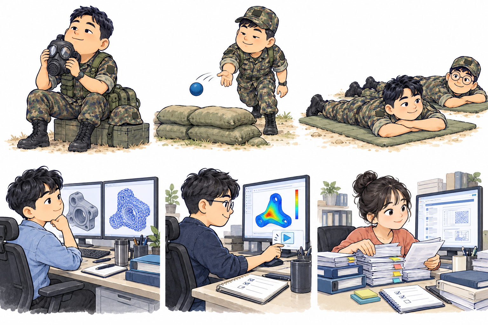
내 전문성이 보이지 않으면, 맡는 일도 비슷해진다.
전문성의 가시성을 설명하는 비유 · 실제 업무는 직무와 개인의 경험에 따라 다릅니다.
02 / 채용 시장에서 보이는 나
조금 더 높은 위치
나만의 색논문 1–2편
깊고 넓어진 색논문 5편 이상
연구가 쌓이면, 나를 찾는 이유가 생긴다.
논문 수와 채용 상황은 설명을 위한 예시입니다.
03 / 공부가 힘들어도, 연구는 다를 수 있다
배운 내용을 익히고,
같은 기준으로 평가받는다.
“배운 대로 풀었는가?”
주제가 주어져도, 접근법은 내 선택.
내 아이디어를 근거와 논리로 설득한다.
“나는 어떻게 풀어볼까?”
더 큰 자유도, 더 선명한 나만의 색.
04 / 눈에 보이는 나의 성과
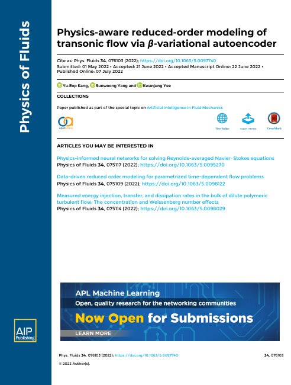
01 PAROM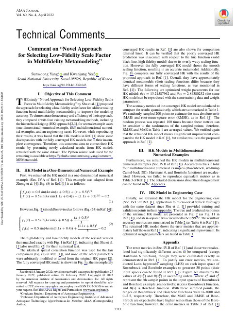
02 Comment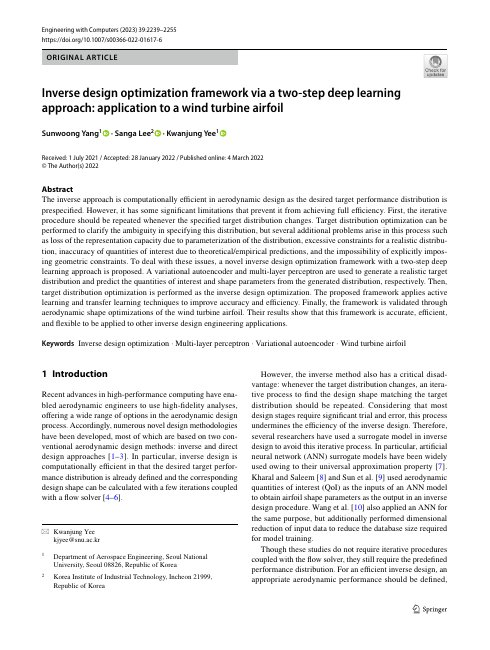
03 Inverse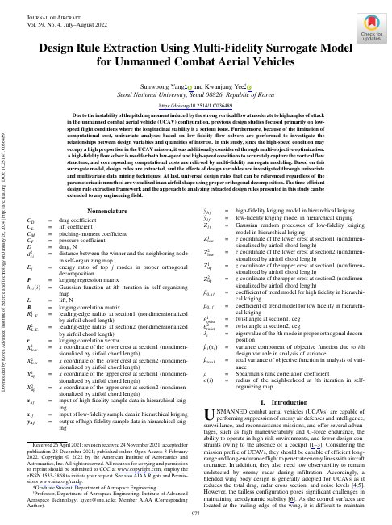
04 DesignRule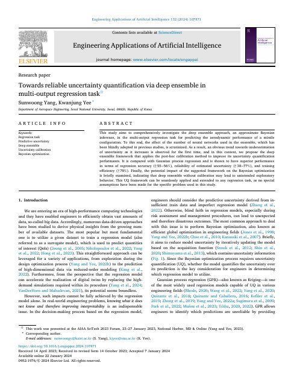
05 DE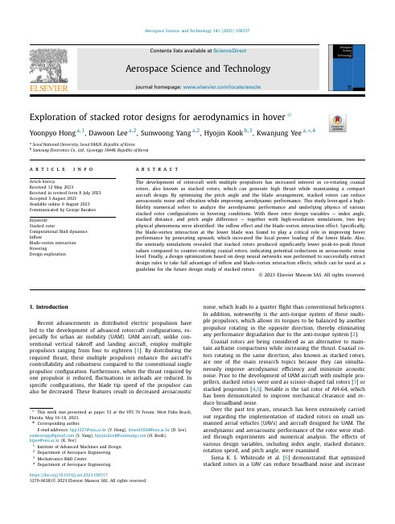
06 Stacked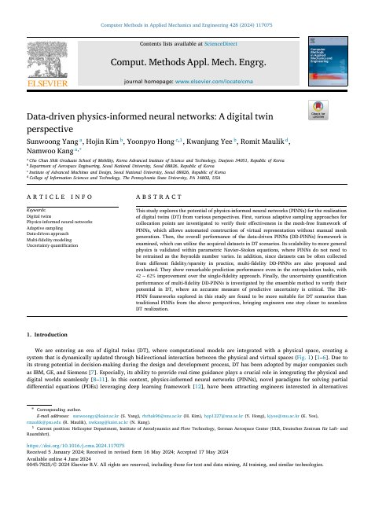
07 DDPINN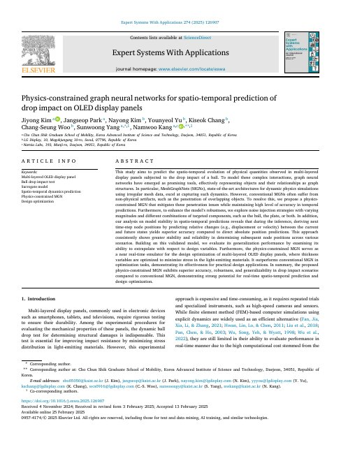
08 MGN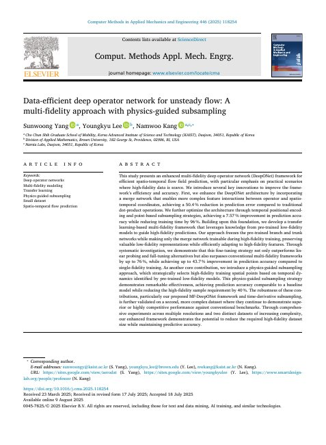
09 MFDeepONet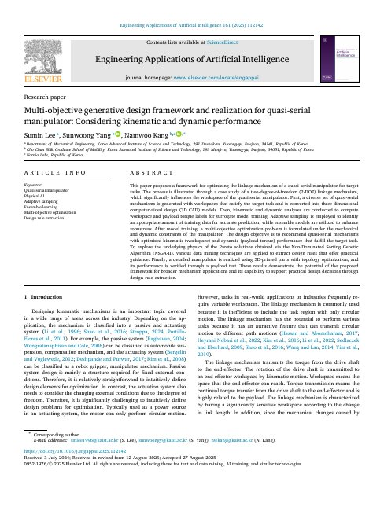
10 Manipulator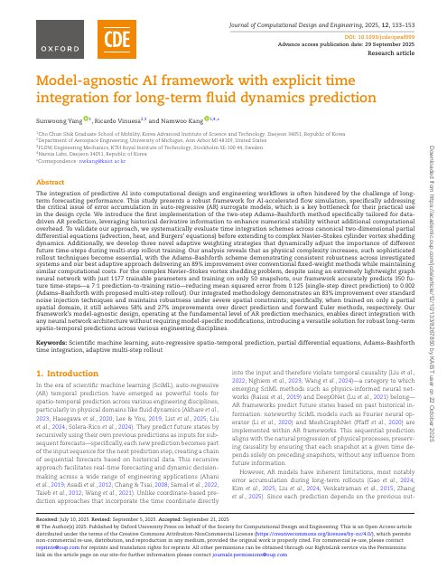
11 ARGNN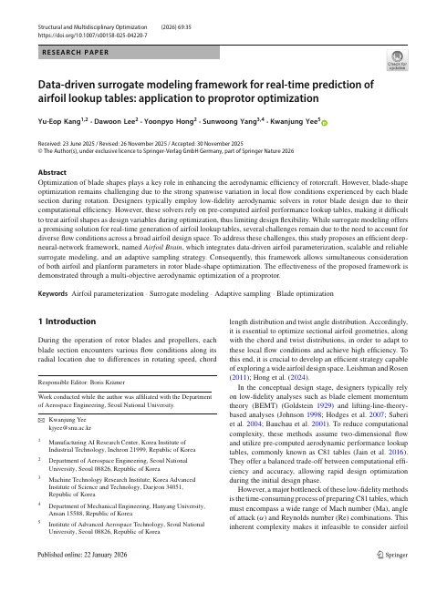
12 AirfoilBrain UQ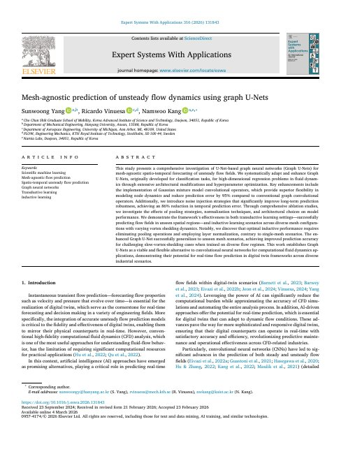
13 GraphUNet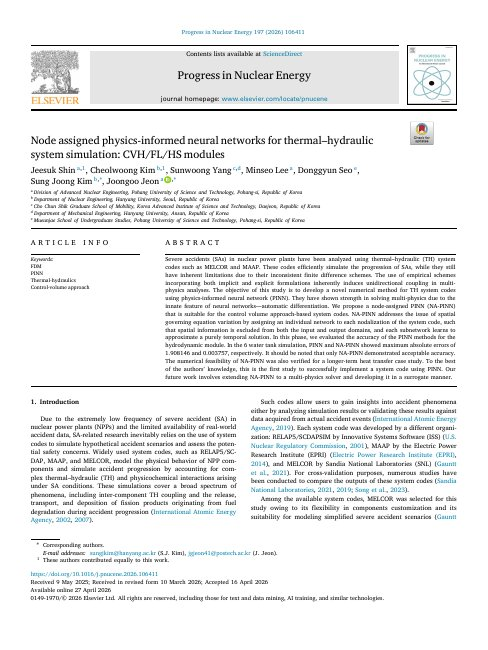
14 NA PINN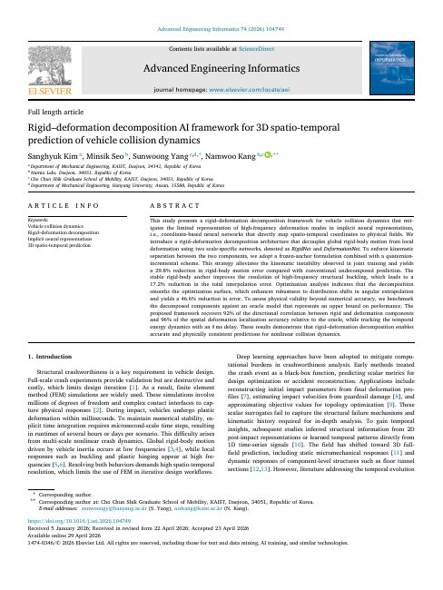
15 Vehicle Collision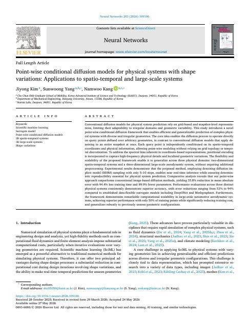
16 Point Diffusion문제를 푼 경험 → 논문 → 내 능력을 보여주는 증거
내 이름으로 남아, 평생 내 커리어와 함께한다.
05 / 성과가 열어주는 기회
연구직 선택의 폭이 넓어진다.
나의 전문성이, 지원 가능한 회사의 폭을 넓힌다.
막대 높이는 실제 회사 수가 아닌 기회 확장의 개념 표현입니다. 지원 자격은 기업·직무·경험에 따라 다릅니다.
06 / 왜 ERICA인가
대학원의 가치는 간판을 넘어, 내가 성장할 수 있는 환경.